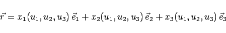

Inhalt Index DeskTop Bronstein

 Lineare Algebra Tensoren Tensoren in krummlinigen Koordinatensystemen Kovariante, kontravariante und gemischte Koordinaten von Tensoren 2. Stufe
Lineare Algebra Tensoren Tensoren in krummlinigen Koordinatensystemen Kovariante, kontravariante und gemischte Koordinaten von Tensoren 2. Stufe


In einem kartesischen Koordinatensystem mit den Basisvektoren und  kann ein Tensor 2. Stufe T als Matrix
kann ein Tensor 2. Stufe T als Matrix
dargestellt werden. Durch
|  | (4.90) |
werden krummlinige Koordinaten u1,u2,u3 eingeführt. Die neue Basis werde mit und bezeichnet. Es gilt
| (4.91) |
Setzt man dann können und als kovariante und kontravariante Basisvektoren aufgefaßt werden.